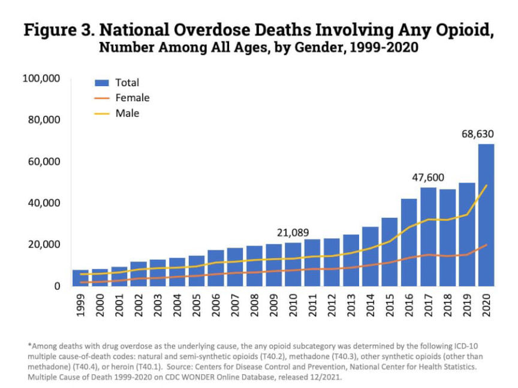
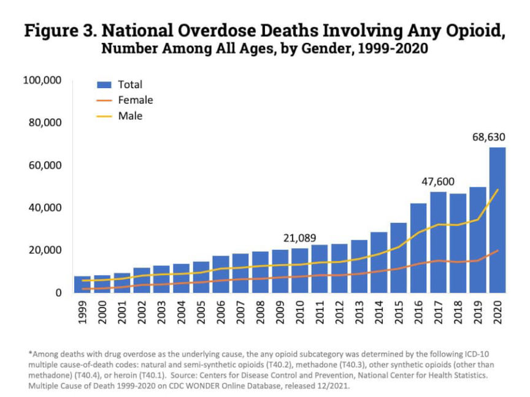

Four Charged for Shipping Kilos of Fentanyl Pills Across the US
A federal grand jury returned a four-count indictment accusing four alleged drug dealers of shipping kilograms of fentanyl pills across the United States.
The indictment charges Derrean Wall, Cortez West, Dayareon Crofton, and Floyd Head with conspiracy to possess with intent to distribute a controlled substance. Wall faces three additional counts of possession with intent to distribute a controlled substance.
In January 2022, postal inspectors seized a suspicious package en route to Cleveland, Ohio. Later, investigators learned the package contained 2.2 kilograms of fentanyl pills. During the investigation that followed the package seizure, police allegedly identified Crofton, Head, and West as the senders of the package.
Over the next three months, police arrested Crofton, Head, and West. Police seized approximately two kilograms of fentanyl pills from each defendant.
On April 27, 2022, police executed search warrants at two locations in Ohio. During the execution of the search warrants, officers encountered and arrested Wall, the intended recipient of the intercepted package. Police found “large quantities” of fentanyl pills, heroin, and methamphetamine during the searches.
Fentanyl has been responsible for the majority of fatal overdoses since 2016.
According to the NIDA, the number of fatal drug overdoses have increased every year since 1999 with the exception of 2018. The chart below is from the National Institute on Drug Abuse. It appears as if the number of overdoses increased once again in 2021. And 70% of all fatal opioid overdoses [img=]occur in males[/img].

[em]Four Charged with Trafficking Fentanyl Pills from Southwestern U.S. to Cleveland[/em] | archive.is, archive.org, justice.gov.
The indictment charges Derrean Wall, Cortez West, Dayareon Crofton, and Floyd Head with conspiracy to possess with intent to distribute a controlled substance. Wall faces three additional counts of possession with intent to distribute a controlled substance.
In January 2022, postal inspectors seized a suspicious package en route to Cleveland, Ohio. Later, investigators learned the package contained 2.2 kilograms of fentanyl pills. During the investigation that followed the package seizure, police allegedly identified Crofton, Head, and West as the senders of the package.
Over the next three months, police arrested Crofton, Head, and West. Police seized approximately two kilograms of fentanyl pills from each defendant.
On April 27, 2022, police executed search warrants at two locations in Ohio. During the execution of the search warrants, officers encountered and arrested Wall, the intended recipient of the intercepted package. Police found “large quantities” of fentanyl pills, heroin, and methamphetamine during the searches.
In the U.S., these charges carry a mandatory minimum sentence of ten years in prison.
Fentanyl has been responsible for the majority of fatal overdoses since 2016.
According to the NIDA, the number of fatal drug overdoses have increased every year since 1999 with the exception of 2018. The chart below is from the National Institute on Drug Abuse. It appears as if the number of overdoses increased once again in 2021. And 70% of all fatal opioid overdoses [img=]occur in males[/img].

Men account for 69% of all fatal drug overdoses. 70% of all opioid overdoses.
[em]Four Charged with Trafficking Fentanyl Pills from Southwestern U.S. to Cleveland[/em] | archive.is, archive.org, justice.gov.